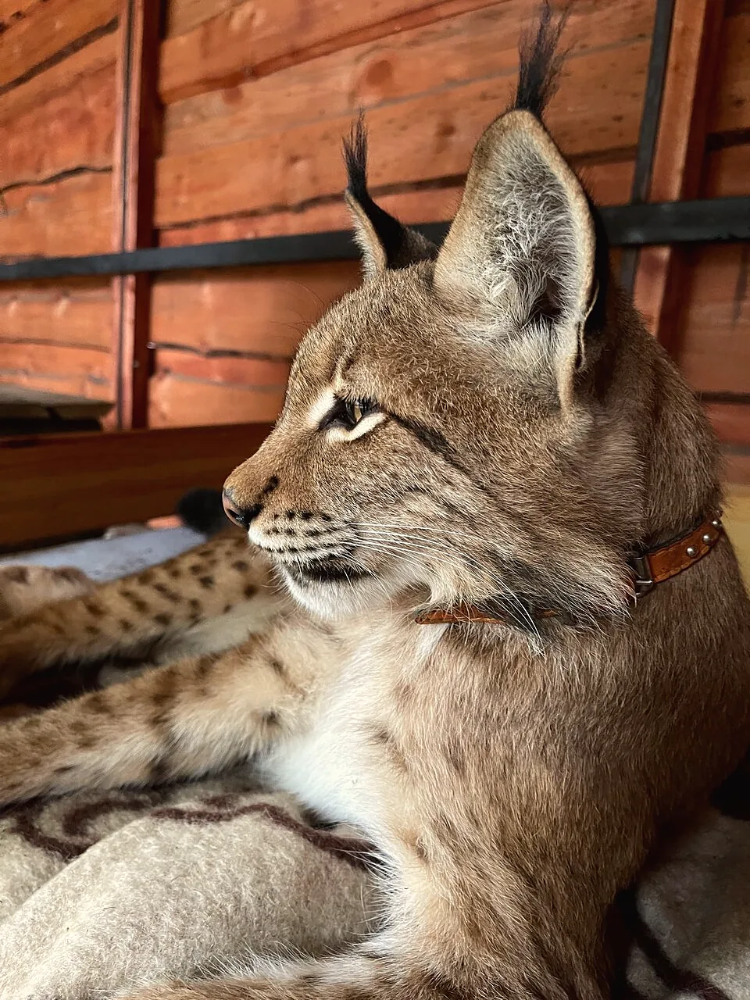
Рысь ВелесРучная и ласковая — гладить можно, но только с разрешения
Рысь, альпаки, хорьки, олени и ещё много питомцев — в агроусадьбе «НатЮрлих» под Барановичами. Гид расскажет историю каждого, а угощение для зверей можно привезти с собой.
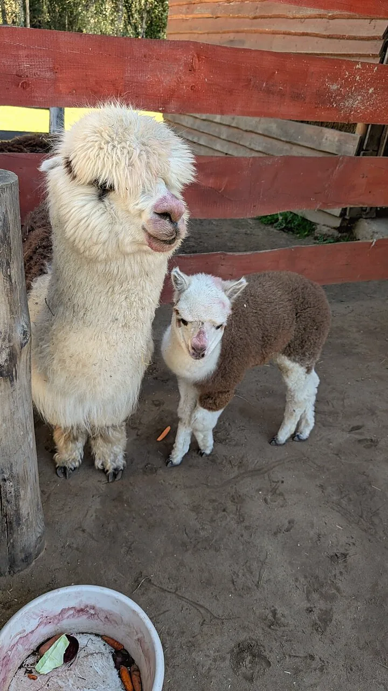
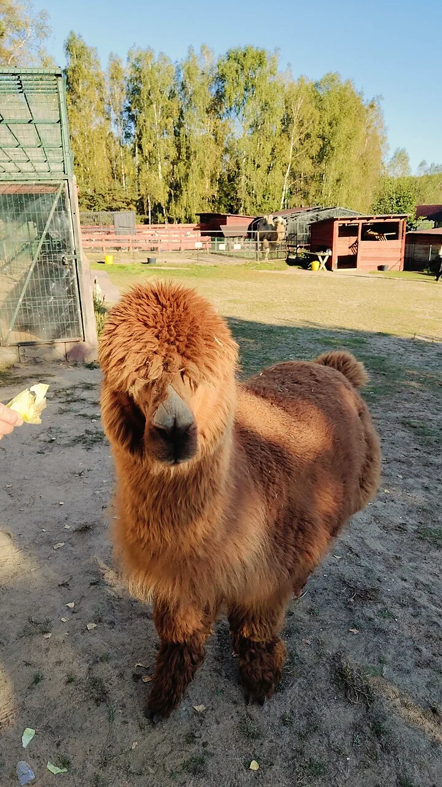
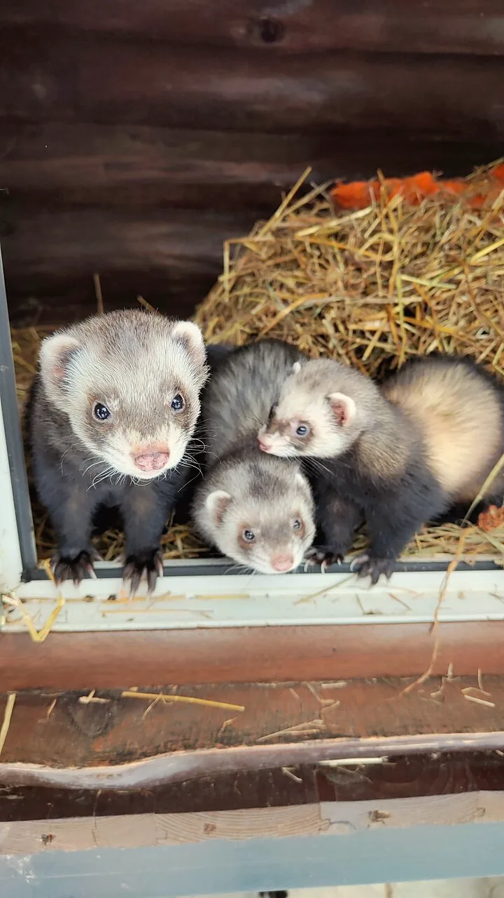
Почти к любому питомцу можно зайти в вольер — под присмотром работников и только с их разрешения.

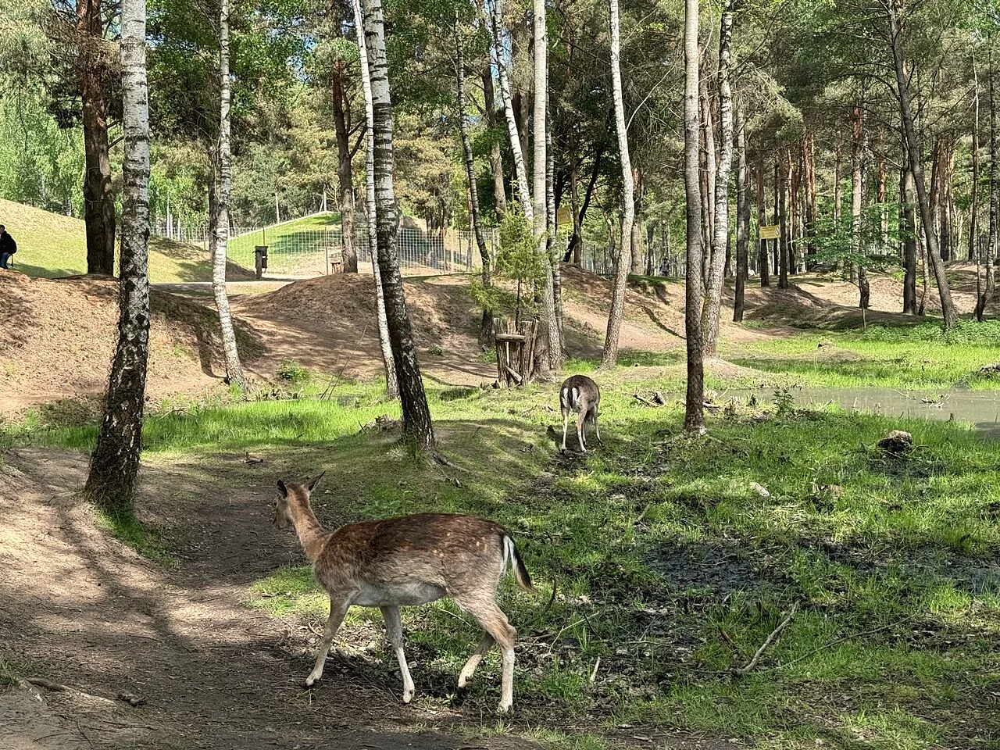
Живут в сказочном домике — и одна из енотов, Злата, очень забавно ворчит
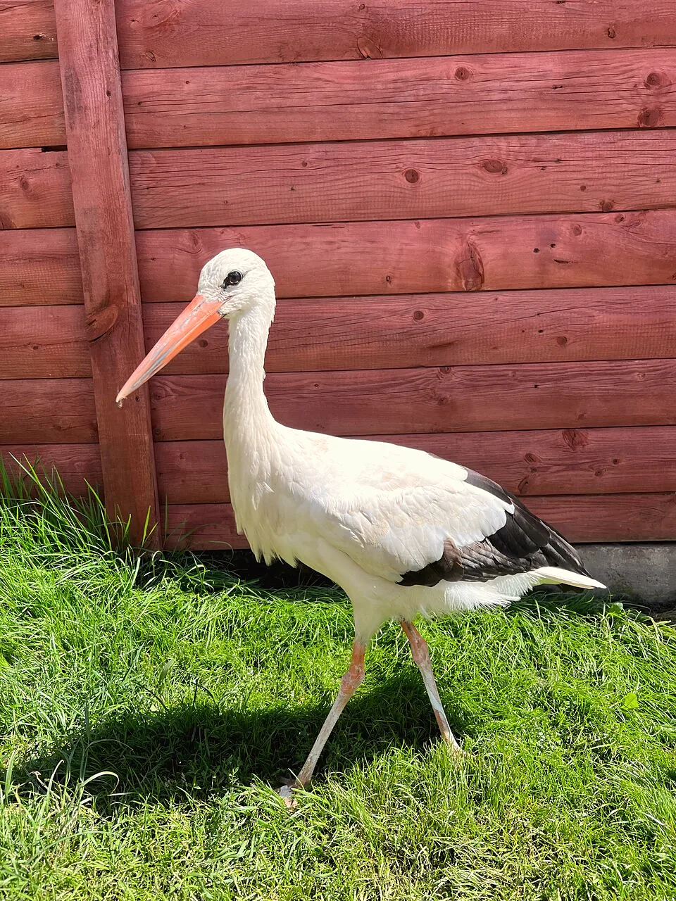
А ещё верблюд, дикобразы, павлины, ослики и носуха
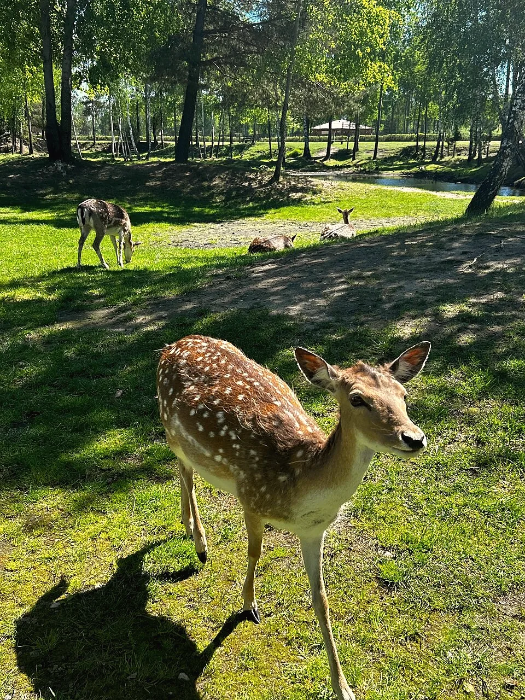
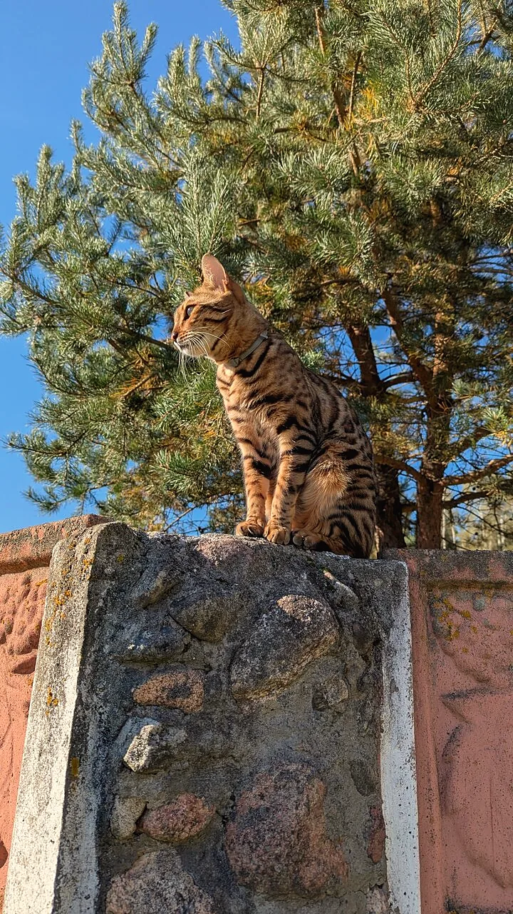
Гости часто пишут, что здесь животных по-настоящему любят — и это сразу видно.
Пятница, суббота, воскресенье — с 12:00 до 18:00
Расскажут историю каждого питомца и как с ним себя вести
Под присмотром работников — можно зайти в вольер и сфотографироваться
После экскурсии — тёплый чай со сладостями в беседке с очагом
Для хищников — мясо без кости, для остальных — овощи и фрукты: капусту, морковку, яблоки.
Подробно пишем в Instagram — загляните перед поездкой.
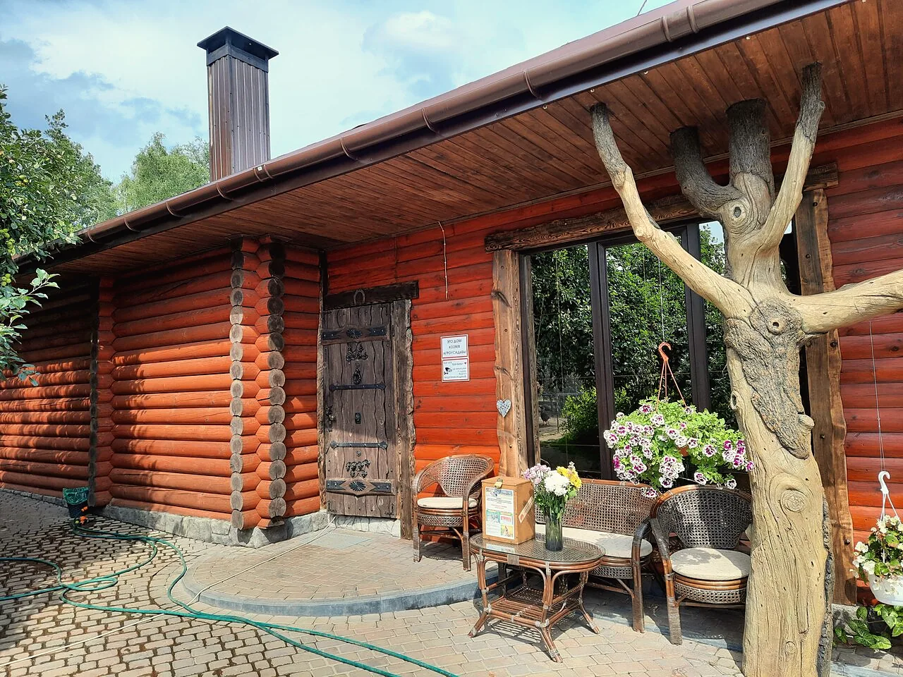
Чистые вольеры, цветы, пруд с камнями и много мест для фото с питомцами.
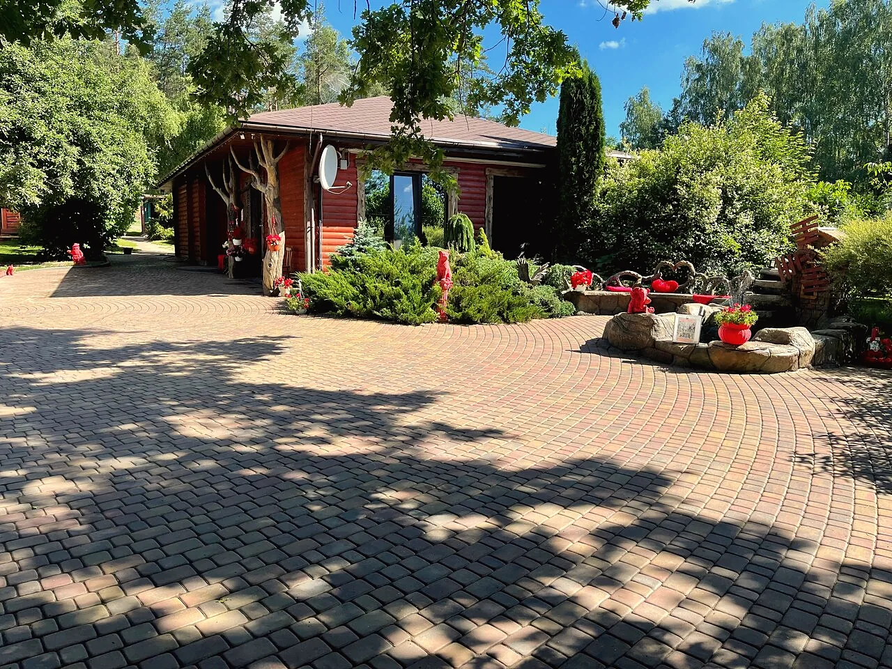
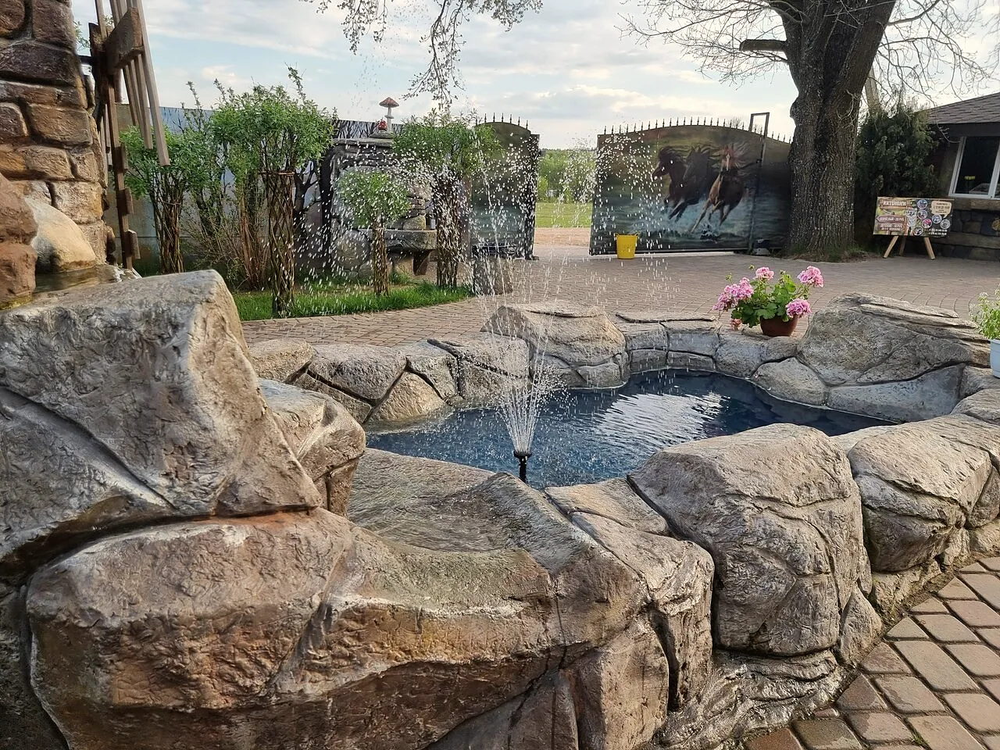
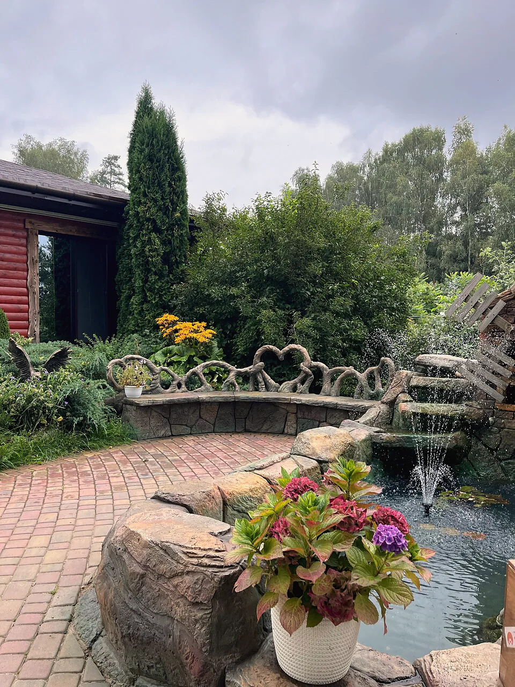
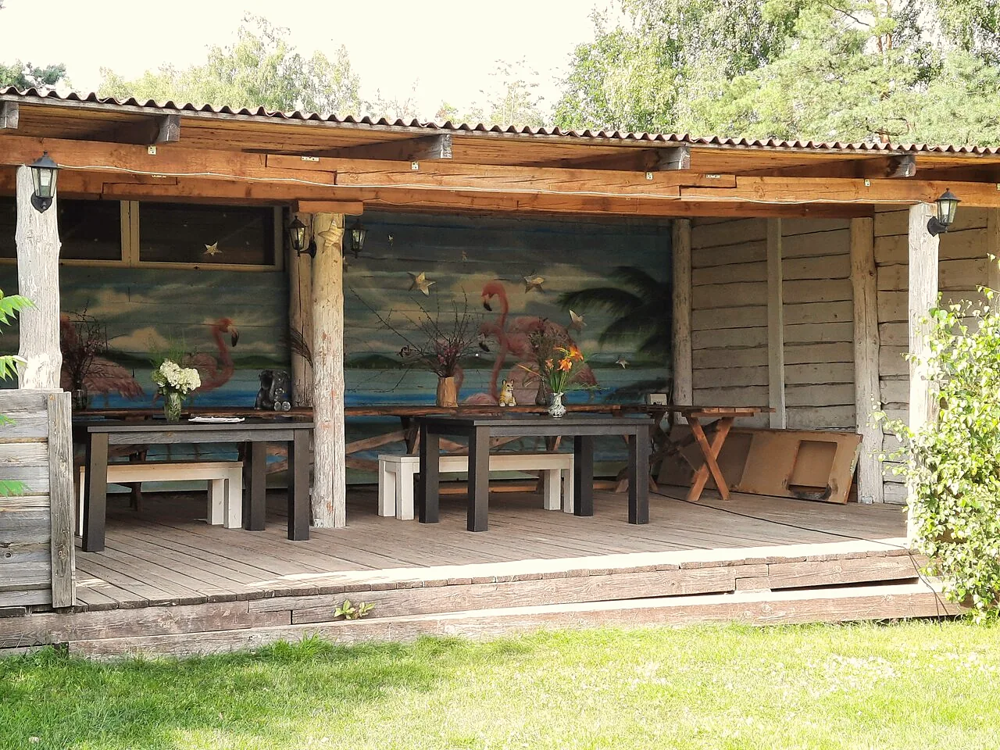
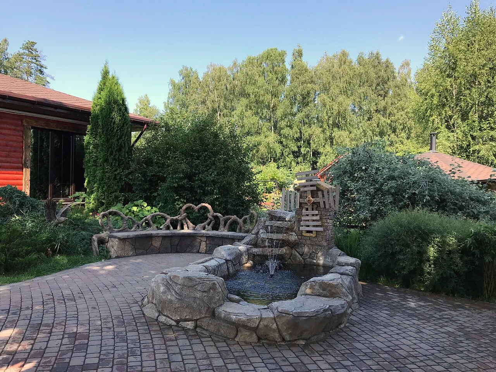
504 отзыва — и почти в каждом про то, как здесь заботятся о животных.
Впечатление, что приехал к родственникам на ферму с экзотическими животными. Там не просто содержат зверей, чтобы заработать. Там их любят.Наталья К.
Дети были просто очарованы! Гиды дружелюбные и рассказывают много интересного о питомцах. После экскурсии всех напоили чаем со сладостями в беседке с очагом.Сергей Б.
Много экзотических животных, которых можно погладить и сфотографироваться с ними. Рысь Велес вообще отдельная любовь. Запаха вообще нет, не то что в зоопарке.Оксана М.